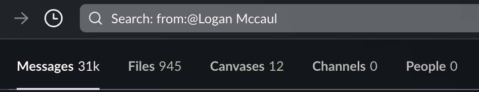
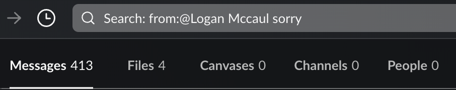

20.6% of my Slack messages include !
One day a coworker asked for advice on how to tell a more junior engineer that they don't need to say sorry for asking questions. After sharing some guidance a different question arose: can quantify how often we use specific words on Slack.
There are a few different ways you could analyze your Slack events. There's a Slack analytics dashboard that can give you high level insights into organizational communication. You could also export all Slack messages (or a specific user's Slack messages) from your workspace and then analyze it using some form of text mining. In my case my company has restricted access to the analytics dashboard and I didn't want to make a business case on why I needed an export of all Slack messages. Instead, I used the simplest tools available, Slack's search.
You can make a simple Slack search for all of your messages to get a total count. 
In my case Slack found roughly 31,000 total messages. It's important to note this count will depend on your workspace's retention policy. At my company direct messages persist indefinitely and channel conversations are deleted after 1 year, so I've technically sent more than 31,000 messages, but we're looking for directional data anyway.
Adding a keyword then gives you a subset of those messages that include the keyword. 
Slack found 413 messages that included sorry, meaning about 1.3% of my Slack messages include the word sorry in them somewhere. Among my coworkers this became known as "your sorry ratio". Interestingly enough, despite stereotypes, my female coworkers used "sorry" about as often as everyone else. In fact, 1.3% ended up being on the higher end with most folks hovering between 0.3% - 0.7%. Maybe the stereotype should be redefined for engineering managers, or maybe just for me.
So, what does a 1.3% sorry ratio say about my communication style? I don't know. That's probably something for me to reflect on by looking at the actual context of the messages. That's a good topic for a future article. Instead, with this new concept of ratios I ended up discovering some fun patterns about my Slack communication style.
For example, I found that I use a variety of affirmative words such as "yes" (1.4%), "yup" (0.8%), and "yeah" (2.6%) in my messages. I use "no" (5.6%) slightly more in my messages, "no" isn't always negative though, I use "no worries" (0.7%) in some of them. I don't use a lot of other negative words, both "nah" and "nope" are less than 0.1%.
I tend to spell out "I don't know" (2.4%) instead of "idk" (0.1%).
I ask "what" (6.0%) twice as often as the other five w's: "where" (1.9%), "why" (2.7%), "when" (2.8%), and "who" (1.3%).
3.9% of my messages include either "thanks" or "thank you". I captured both in a single search of "thank" (3.9%).
I use "engineer" (6.1%) more often than "design" (4.5%) or "product" (3.4%) and I've bought into my company's specific terminology by using "customer" (2.8%) more often than "user" (1.6%).
I use "lol" (1.4%) and "haha" (1.0%) almost equally. 2.4% of my messages include laughter, which seems low, but I also enjoy the unaccounted for 😂 as a reaction.
I refer to myself in 45.2% of my messages with "I" (38.7%) and "me" (6.5%) and only include "you" (24.3%) in almost half as few messages.
At least 24.5% of my messages don't include common punctuation, such as "." (29.7%), "?" (25.2%), "!" (20.6%). There could be overlap in the messages that use ".", "?", or "!" so the number of messages where I don't use any closing punctuation could actually be higher.
My favorite is the "!" at 20.6%. This one indicates to me that in one out of five of my Slack messages I'm really excited! That, or I am angry 1/5th of the time.
My Slack ratios
| Word | Messages | Ratio |
|---|---|---|
| I | 12,000 | 38.7% |
| . | 9,229 | 29.7% |
| ? | 7,893 | 25.2% |
| you | 7,535 | 24.3% |
| ! | 6,386 | 20.6% |
| me | 2,005 | 6.5% |
| engineer | 1,907 | 6.1% |
| what | 1,863 | 6.0% |
| no | 1,749 | 5.6% |
| 😄 | 1,726 | 5.6% |
| good | 1,660 | 5.3% |
| hey | 1,630 | 5.3% |
| design | 1,399 | 4.5% |
| thank | 1,214 | 3.9% |
| product | 1,044 | 3.4% |
| when | 888 | 2.8% |
| customer | 862 | 2.8% |
| why | 827 | 2.7% |
| yeah | 807 | 2.6% |
| oh | 809 | 2.6% |
| don't know | 744 | 2.4% |
| 🙂 | 744 | 2.4% |
| 😅 | 693 | 2.2% |
| where | 600 | 1.9% |
| user | 491 | 1.6% |
| yes | 443 | 1.4% |
| lol | 420 | 1.4% |
| who | 401 | 1.3% |
| data | 342 | 1.1% |
| hi | 324 | 1.0% |
| analytics | 323 | 1.0% |
| haha | 310 | 1.0% |
| yup | 245 | 0.8% |
| no worries | 221 | 0.7% |
| 🎉 | 191 | 0.6% |
| sounds good | 128 | 0.4% |
| 👋 | 82 | 0.3% |
| hello | 53 | 0.2% |
| idk | 44 | 0.1% |
| howdy | 22 | 0.1% |